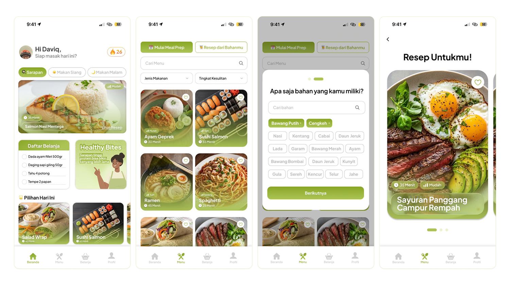

The challenge of cooking
Generation Z, especially students living away from home and early-career workers, often struggle to maintain healthy eating habits. Based on secondary research (health articles and lifestyle surveys), the main challenges include limited budgets, busy schedules that leave little time for cooking, and difficulties in planning daily meals. As a result, they tend to rely on instant meals or fast food, which can negatively impact long-term health, including obesity and micronutrient deficiencies.
Problem Statement
"How might we help students and young professionals plan and cook healthy meals that fit their limited budgets and busy schedules, while making the most of the ingredients they already have?"
Gap Analysis
"Current recipe applications only provide recipes without considering the ingredients users already have, meaning they still need to shop for additional items. There is also a lack of features that integrate leftover ingredients in the fridge with budget-friendly meal prep planning."
Who are we designing for?
David Simanjuntak, 24
Junior marketing · Bandung · living alone in kost
- ⚠ Often buys groceries without a plan, resulting in a lot of food waste. Frequently wonders, "What should I eat today?" after coming home late.
- 🎯 Wants to eat healthy and maintain regular meals without the hassle. Looking for a practical "digital kitchen assistant" to quickly cook meals using available ingredients.
- 📱 Needs: weekly meal planning, recipe-by-ingredient search, automatic shopping lists, and cooking time under 30 minutes.
Nisa Rahmawati, 21
6th-semester student · Bandung · living in a shared kost
- ⚠ Often runs out of money due to frequently buying fast food. Struggles to decide what to cook with limited cooking equipment and a budget of Rp50,000 for 3 days.
- 🎯 Wants to live independently and maintain a healthy lifestyle. Needs an application that helps save money without compromising nutrition and taste.
- 📱 Needs: budget-based meal prep, estimated cost per meal, practical recipes using ingredients from nearby local stores, and ingredient inventory tracking for purchased items.
Design process
Empathize
Interviews with target users (anak kos, pekerja muda, keluarga muda). Observation of daily shopping and meal-choosing behavior to understand actual patterns vs stated preferences.
Define
Core problem statement: "Many individuals want to cook to live healthier and save money, but are blocked by time, budget, and difficulty finding recipes that match their needs and skill level."
Ideate
Brainstorming + mind mapping by function: meal planning, ingredient management, budget tracking, nutrition. Prioritized: automated Meal Prep with integrated recipe recommendations and shopping list.
Prototype
Wireframe for navigation structure and core flows (beranda, menu, belanja, profil). Then high-fidelity with documented design system: green brand palette, Inter font, outline icon set.
Test + iterate
Usability testing with target users via scenario-based tasks: planning a weekly menu, matching recipes to available ingredients, adjusting for a tight budget.
Key design decisions
The "why" behind the screens.
4-pillar bottom navigation
Belanja gets its own nav tab, unusual for a cooking app. This reflects the insight that shopping list management is one of the most frequently-used parts of the cooking cycle, not a secondary feature tucked inside a recipe. Elevating it signals to users: "this app actually respects how you cook in real life."
Dual entry to "Resep dari Bahan"
Deliberately placed in two locations to serve two user types: David who spontaneously wants inspiration (enters from Beranda), and Nisa who has a clear planning goal (enters from Menu). Same feature, two valid starting points, no dead ends in the IA.
Budget question before health goal question in Meal Prep flow
Think about Nisa's scenario, what happens if you ask health goals first when someone just wants to eat within Rp 50k? This is a sequencing decision that shows empathy for the user's actual mental model.
Cooking streak tracker
The cooking streak tracker is the retention mechanism, not just a gamification add-on. From our research, the biggest dropout point for people trying to cook regularly is the gap between intention and habit. A visible streak makes the gap feel concrete and recoverable.
Final design

Outcome + reflection
What the scenarios validated
Both user journeys resolved their core pain points in under 5 minutes of interaction. David's food waste problem and menu paralysis are eliminated by recipe-from-ingredients. Nisa's budget stress is fully absorbed by the Meal Prep flow, one input, one output, done.
What I'd do differently
I'd test the Meal Prep flow with actual numbers, giving users a specific budget like Rp 50.000 and asking them to complete the task, then measuring whether the generated menu felt trustworthy and satisfying. We validated the flow exists, but not whether users actually believed the output. Trust in AI-generated meal plans is a separate UX problem we assumed away.
What I learned
This project taught me that information architecture is an empathy decision, not a structural one. Where you place a feature tells the user what you think they prioritize, putting Belanja in the main navigation is a statement that says 'we know you think about shopping as much as you think about cooking.' Every navigation decision is a hypothesis about the user's mental model.